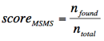

MS/MS pattern evaluation
Description
Tandem mass spectrometry (MS/MS) is a common method used to obtain structural information about analyzed ions.
During fragmentation, part of the original ion is detached, and the mass of the detached part is called the neutral loss.
The neutral loss represents a fragment of the original molecule, so the chemical formula of such fragment must be a subset
of the chemical formula of the precursor. When searching for the ion’s chemical formula, each candidate formula may
therefore be evaluated using the ion’s MS/MS spectrum.
Evaluation algorithm
The evaluation score is calculated for each candidate formula F as described belows:
-
Mass list must be provided for the MS/MS spectrum of the ion of interest (see the Mass detection module). It is assumed that all items in the mass list represent true fragment ions and noise has been removed.
-
If the mass list contains any isotopes, remove them from the list. Isotopes are defined as ions with mass approximately 1 Da higher than another ion on the list, which has higher intensity.
-
Calculate neutral losses for all the ions on the list by subtracting the fragment ion mass from the precursor mass.
-
Try to generate a chemical formula for each neutral loss using the elements and maximum counts of formula F, within the user-defined mass tolerance. Small neutral losses (less than 5 Da) are ignored.
-
If at least one formula can be found, the neutral loss is considered as interpreted.
-
The evaluation score is calculated as

where nfound is the number of ions for which the neutral loss could be interpreted, and ntotal is the total number of considered fragment ions